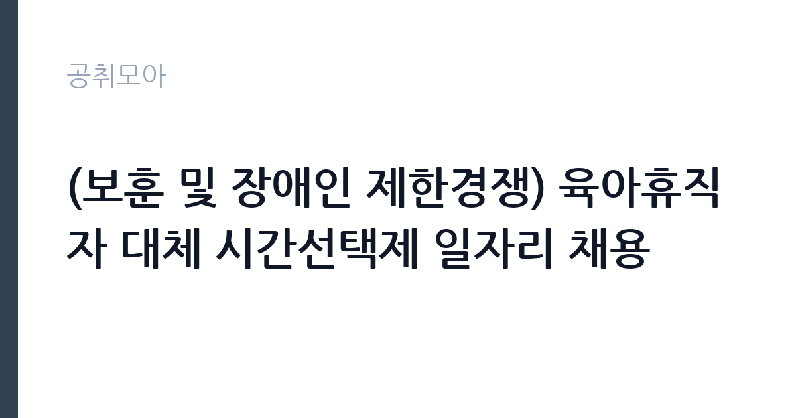

[공공기관] (보훈 및 장애인 제한경쟁) 육아휴직자 대체 시간선택제 일자리 채용
신용보증기금 · 서울 · 마감 2026-11-02 (D-15) · 출처 잡알리오

한눈에 보는 모집 조건
| 기관 | 신용보증기금 |
|---|---|
| 공고명 | (보훈 및 장애인 제한경쟁) 육아휴직자 대체 시간선택제 일자리 채용 |
| 고용형태 | 정규직 |
| 근무지 | 서울 |
| 게시일 | 2026-10-19 |
| 마감일 | 2026-11-02 (D-15) |
지원자격, 이렇게 읽으세요
- 공공기관 채용공시
- 세부 조건은 원문 공고문 확인
응시 자격의 첫 관문은 보훈 또는 장애인 요건입니다. 국가유공자 등 예우 및 지원에 관한 법률에 따른 취업지원대상자이거나, 장애인고용촉진 및 직업재활법에 따른 장애인이어야 합니다. 성별과 학력, 연령에는 제한이 없지만 접수 마감일 기준 신용보증기금 정년인 만 60세를 넘으면 지원할 수 없습니다. 병역법 제76조에 따른 병역의무 불이행자는 제외되고, 신용보증기금에서 시간선택제로 근무한 경험이 있어도 지원이 제한됩니다. 채용 예정일부터 즉시 근무가 가능해야 하며, 내규상 채용제한·합격취소 사유에 해당하지 않아야 합니다.
이 공고의 포인트
이 공고의 핵심은 근무 형태입니다. 시간선택제는 하루 근무 시간이 전일제보다 짧아, 육아나 돌봄과 병행하려는 지원자에게 맞습니다. 대신 총보수는 근무 시간에 비례해 줄어듭니다. 두 번째 특징은 계약 구조입니다. 육아휴직자 대체 인력이라 휴직자가 복직하면 계약이 종료되는 구조이고, 근무평가에 따라 휴직자 복직일까지 연장될 수 있습니다. 세 번째는 제한경쟁이라는 점입니다. 보훈과 장애인 요건을 갖춘 지원자만 경쟁하므로 일반 공개채용보다 경쟁 폭이 좁습니다.
전형은 어떻게 진행되나
전형은 서류전형, 면접전형, 신체검사 및 결격사유 조회, 최종합격 순으로 진행됩니다. 서류전형은 모집 인원의 10배수를 선발하고, 면접전형에서 1배수를 뽑는 구조입니다. 면접은 구조화된 방식으로 기본 인품, 업무적응력, 조직적응력, 의사소통능력, 윤리의식을 종합 평가하며, 평가점수가 만점의 40% 미만이면 과락입니다. 보훈과 장애인, 사회적 배려 대상자에게는 전형 단계별로 가점이 부여되고, 증빙서류를 내지 않으면 가점이 인정되지 않습니다. 접수는 신용보증기금 채용 홈페이지에서 온라인으로 진행됩니다.
원문에서 확인한 전형 방식
ㅇ 채용부문별 응시자 - 보훈 : 「국가유공자 등 예우 및 지원에 관한 법률」등에 의한 취업지원대상자 - 장애인 : 「장애인고용촉진 및 직업재활법」에 의한 장애인 ㅇ 채용제한 및 합격취소 사유에 해당되지 않는 자(결격사유 참고) ㅇ 성별, 학력, 연령 등 제한 없음 (단, 접수 마감일 기준 신용보증기금 정년(만 60세)을 초과한 자,「병역법」76조에서 정한 병역의무를 불이행한 자, 신용보증기금 시간선택제 근무 경험자는 지원 불가) ㅇ 채용 예정일에 즉시 근무 가능한 자 ※ 자세한 내용은 첨부된 채용 공고를 참고해 주시기 바랍니다.
이런 분께 추천해요
- 보훈 취업지원대상자로 시간선택제 근무를 찾는 지원자
- 장애인 등록자로서 금융 공공기관 경력을 쌓으려는 분
- 육아·돌봄과 업무를 병행해야 하는 경력자
지원 전 체크리스트
- 보훈 또는 장애인 요건을 증빙할 수 있는가
- 가점 증빙서류를 사전 발급했는가
- 접수 마감일 기준 만 60세 미만인가
- 시간선택제 근무 시간과 보수 감소를 감수할 수 있는가
모집 일정과 제출 타이밍
접수 마감은 2026년 11월 2일입니다. 서류전형 결과와 면접 일정은 채용 홈페이지와 개별 통보로 안내되고, 최종합격 후 신체검사와 결격사유 조회를 거쳐 임용됩니다. 육아휴직자 대체 인력이므로 계약 시작일은 휴직자의 휴직 기간에 맞춰 정해지고, 복직 시 계약이 종료됩니다. 가점 증빙은 접수 시점에 미리 준비해야 하며, 추후 제출이 불가능하면 불합격 처리될 수 있습니다.
직무 이해하기: 공공기관
시간선택제 일자리의 업무는 배치 부서에 따라 달라집니다. 신용보증기금은 중소기업에 신용보증을 제공하는 공공기관으로, 보증 심사와 사후관리, 전산과 총무, 고객 응대 업무가 있습니다. 대체인력은 휴직자가 맡던 업무를 인수해 처리합니다. 인수인계 기간이 짧을 수 있어 문서와 절차를 빠르게 익히는 능력이 중요합니다. 시간선택제라도 업무 범위는 전일제와 동일하므로, 정해진 시간 안에 처리하는 우선순위 관리가 핵심입니다.
자기소개서 작성 팁
자기소개서는 제한경쟁 채용의 취지를 이해하고 있다는 점을 자연스럽게 드러내는 것이 좋습니다. 보훈이나 장애인으로서의 경험을 과장하거나 미화하지 말고, 업무에 필요한 역량과 연결하세요. 짧은 계약 기간에 인수인계를 받아 성과를 내야 하므로, 이전 직장에서 빠르게 업무를 익혀 처리한 사례가 좋은 소재입니다. 지원동기는 신용보증기금의 역할, 즉 중소기업 금융 지원이라는 공공 기능에 대한 이해로 풀어내세요. 시간선택제 근무 시간과 계약 조건을 정확히 이해하고 있다는 점도 밝히세요.
면접 준비 포인트
면접은 구조화된 방식으로 진행되므로 예상 질문의 틀이 정해져 있습니다. 기본 인품과 의사소통, 조직 적응, 윤리의식이 평가 항목입니다. 공공기관에서 고객의 부당한 요구를 받았을 때 어떻게 대응할지, 상사와 의견이 다를 때 어떻게 조율할지 같은 상황 질문이 나옵니다. 시간선택제 근무로 업무 공백이 생기지 않게 어떻게 관리할지도 준비하세요. 답변은 상황, 판단 기준, 행동 순서로 구조화하면 평가자가 이해하기 쉽습니다.
급여·근무조건 읽는 법
보수는 시간선택제 근무 시간에 비례해 책정되며, 정확한 금액은 원문 공고문의 보수 항목에서 확인해야 합니다. 참고로 고용노동부 인재채움뱅크에 게시된 신용보증기금 시간선택제 대체인력 공고에는 연봉 2,200만원 수준으로 표시된 사례가 있었습니다. 이는 과거 유사 공고의 예시이므로 이번 공고 금액과 같다고 볼 수 없습니다. 육아휴직 대체인력은 기간제법 제4조제1항에 따른 정규직 전환 예외 대상이며, 계약 기간은 휴직자 복직일까지로 최대 근무 기간이 정해져 있습니다. 복지포인트와 건강검진 같은 복리후생은 기관 규정에 따릅니다.
자주 묻는 질문
- 전일제로 근무할 수 있나요
아니요. 이 공고는 시간선택제 일자리로, 전일제 근무가 아닙니다. 구체적 근무 시간은 원문 공고문에서 확인해야 합니다. - 계약 기간은 얼마나 되나요
육아휴직자 대체 인력으로, 휴직자의 복직일까지 계약이 유지되는 구조입니다. 근무평가에 따라 연장될 수 있으나 최대 근무 기간이 정해져 있습니다. - 보훈과 장애인 모두 해당되면 가점이 두 번 적용되나요
가점 항목별로 중복 인정되지만, 보훈 가점을 제외하고 각 전형 평가점수 만점의 최대 10%까지만 인정됩니다.
함께 보면 좋은 공고
[공공기관] '2026 장애인선수 현장밀착형 스포츠과학지원사업' 분석연구원(가급) 채용 공고 — 마감 2026-11-02[공공기관] 한국토지주택공사 서울지역본부 기간제근로자(매입행정역, 매입기술역, 공사원가검토역, 매입변호사, 매입감정평가사) 채용공고 — 마감 2026-11-02[공공기관] 광주전남지사 기간제 계약직(육아휴직 대체인력) 채용 공고 — 마감 2026-11-02출처: 잡알리오 공개정보를 바탕으로 공취모아가 정리한 안내글입니다. 모집 조건·일정은 변경될 수 있으니 지원 전 반드시 원문 공고문을 확인하세요. 본 글은 정보 제공용이며 합격을 보장하지 않습니다.